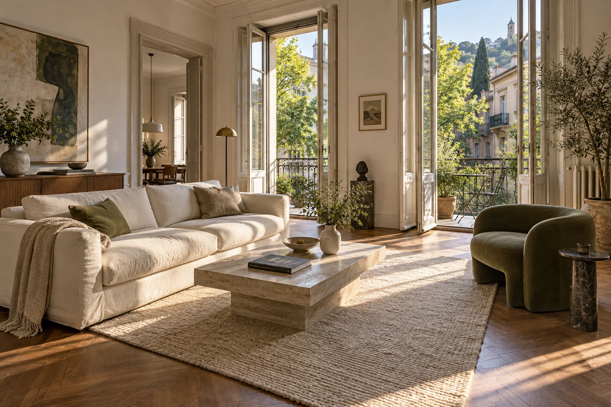
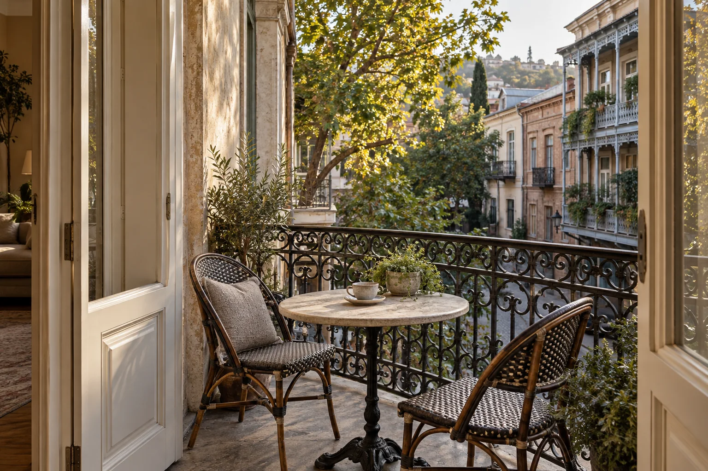

Room to unwind
An open living area with natural textures, generous windows, and a warm material palette.
A closer look
The sample interior pairs a cream sofa, walnut flooring, and a stone coffee table to create an inviting living space.
Character-filled homes, considered details, and a closer look at the neighbourhoods that make Tbilisi feel like home.
Discover the space
An illustrative apartment concept: generous light, a quiet balcony, and room for everyday life.
An open living area with natural textures, generous windows, and a warm material palette.
The sample interior pairs a cream sofa, walnut flooring, and a stone coffee table to create an inviting living space.
Morning coffee, an open door, and a balcony that feels like another room.
An imagined city balcony with wrought-iron details and enough space for a small table and two chairs.
A sense of neighbourhood, framed by the architecture and greenery of Tbilisi.
This visual concept explores historic city character. It does not represent an available property, verified address, or live listing.

The best spaces invite you to imagine your own routine. A slow morning, a favourite corner, an evening with the balcony doors open.
Take the next step ↗This is a showcase for a fictional brand. It does not accept bookings or offer live services. For a website with this level of care, talk to our studio.
Let’s talk about your website ↗